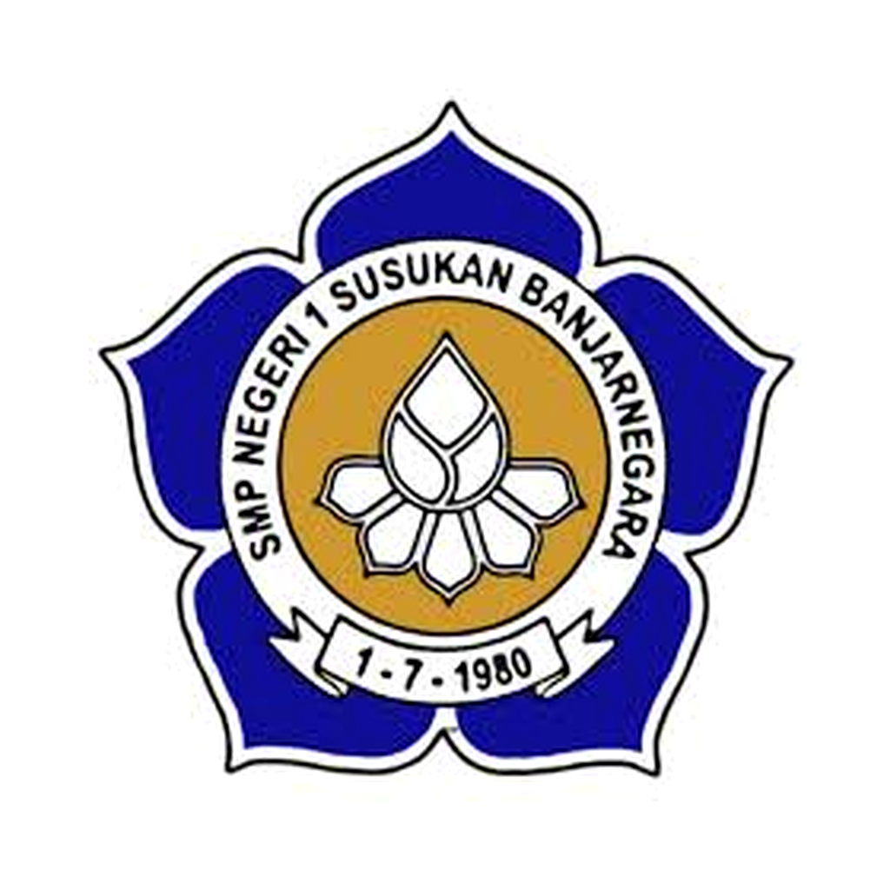

ABOUT SPENSUS
Sekolah bertumbuh bersama ilmu, karakter, dan teknologi.
SMP Negeri 1 Susukan hadir sebagai ruang belajar yang aman, kolaboratif, dan berorientasi pada perkembangan murid.
NPSN 20304047Akreditasi ABerdiri 30 Juli 1980

SMP Negeri 1 SusukanSusukan • Banjarnegara • Jawa TengahArah pendidikan yang berkarakter
Mewujudkan pendidikan berkualitas, berkarakter, berprestasi, dan berakhlak mulia melalui budaya belajar yang aman, ramah, dan kolaboratif.
- Menguatkan iman, akhlak, literasi, numerasi, dan karakter kebangsaan.
- Mengembangkan pembelajaran aktif, mendalam, aman, dan menggembirakan.
- Mendorong prestasi, kreativitas, kepedulian lingkungan, serta kecakapan digital.
- Membangun kolaborasi sekolah, keluarga, masyarakat, dan jejaring pendidikan.